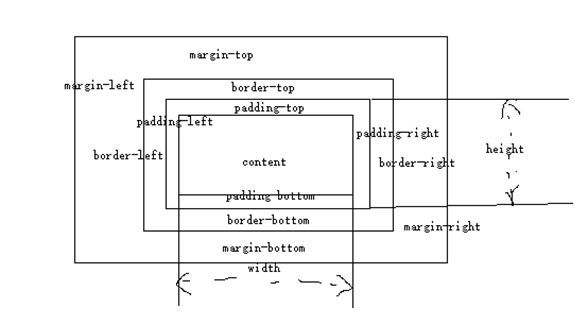
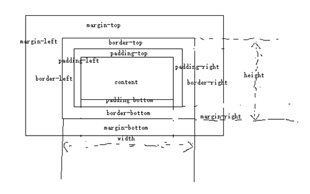

CSS 006常见问题
1.css sprite是什么,有什么优缺点
- 概念：将多个小图片拼接到一个图片中。通过background-position和元素尺寸调节需要显示的背景图案。
- 优点：
- 减少HTTP请求数，极大地提高页面加载速度
- 增加图片信息重复度，提高压缩比，减少图片大小
- 更换风格方便，只需在一张或几张图片上修改颜色或样式即可实现
- 缺点：
- 图片合并麻烦
- 维护麻烦，修改一个图片可能需要从新布局整个图片，样式
2.display: none;与visibility: hidden;的区别
- 联系：它们都能让元素不可见
- 区别：
- display:none;会让元素完全从渲染树中消失，渲染的时候不占据任何空间；
visibility: hidden;不会让元素从渲染树消失，渲染师元素继续占据空间，只是内容不可见 - display: none;是非继承属性，子孙节点消失由于元素从渲染树消失造成，
通过修改子孙节点属性无法显示；
visibility: hidden;是继承属性，子孙节点消失由于继承了hidden， 通过设置visibility: visible;可以让子孙节点显式 - 修改常规流中元素的display通常会造成文档重排。修改visibility属性只会造成本元素的重绘。
- 读屏器不会读取display: none;元素内容；会读取visibility: hidden;元素内容
3.link与@import的区别
- link是HTML方式， @import是CSS方式
- link最大限度支持并行下载，@import过多嵌套导致串行下载，出现FOUC
- link可以通过rel=“alternate stylesheet"指定候选样式
- 浏览器对link支持早于@import，可以使用@import对老浏览器隐藏样式
- @import必须在样式规则之前，可以在css文件中引用其他文件
- 总体来说：link优于@import
4.什么是FOUC?如何避免
- Flash Of Unstyled Content：用户定义样式表加载之前浏览器使用默认样式显示文档，用户样式加载渲染之后再重新显示文档，造成页面闪烁。
- 解决方法：把样式表放到文档的head
5.如何创建块级格式化上下文(block formatting context),BFC有什么用
- 创建规则：
- 根元素
- 浮动元素（float不是none）
- 绝对定位元素（position取值为absolute或fixed）
- display取值为inline-block,table-cell, table-caption,flex, inline-flex之一的元素
- overflow不是visible的元素
- 作用：
- 可以包含浮动元素
- 不被浮动元素覆盖
- 阻止父子元素的margin折叠
6.display,float,position的关系
- 如果display为none，那么position和float都不起作用，这种情况下元素不产生框
- 否则，如果position值为absolute或者fixed，框就是绝对定位的，float的计算值为none，display根据下面的表格进行调整。
- 否则，如果float不是none，框是浮动的，display根据下表进行调整
- 否则，如果元素是根元素，display根据下表进行调整
- 其他情况下display的值为指定值
- 总结起来：绝对定位、浮动、根元素都需要调整display
7.清除浮动的几种方式，各自的优缺点
- 父级div定义height
- 结尾处加空div标签clear:both
- 父级div定义伪类:after和zoom
- 父级div定义overflow:hidden
- 父级div也浮动，需要定义宽度
- 结尾处加br标签clear:both
- 比较好的是第3种方式，好多网站都这么用
8.为什么要初始化CSS样式?
- 因为浏览器的兼容问题，不同浏览器对有些标签的默认值是不同的，如果没对CSS初始化往往会出现浏览器之间的页面显示差异。
- 当然，初始化样式会对SEO有一定的影响，但鱼和熊掌不可兼得，但力求影响最小的情况下初始化
10.盒子模型在不同浏览器上的区别
- 盒子模型是CSS中一个重要的概念，理解了盒子模型才能更好的排版。
- 盒子模型有两种，分别是IE盒子模型和标准W3C盒子模型。
- 它们对盒子模型的解释各不相同，先看看我们熟知的标准盒子模型：

从上图可以看到标准的w3c盒子模型的范围包括margin、border、padding、content，并且content部分不包含其他部分。
在来看下IE盒子模型：

从上图可以看到IE盒子模型的范围也包括margin、border、padding、content，
和标准w3c盒子模型不同的是：ie盒子模型的content部分包含了border和padding。
例如：
一个盒子的margin为20px，border为1px，padding为10px，content的宽为200px、高为50px,
假入用标准盒子模型解释，
那么这个盒子需要占据的位置为：
宽：202 + 1 * 2 + 10 2 + 200 = 262px,
高：20 * 2 + 1 * 2 + 10 * 2 + 50 = 112px。
盒子的实际大小为：
宽12 + 10 * 2 + 200 = 222px,
高1 2 + 10 * 2 + 50 = 72px。
假如用IE盒子模型，那么盒子需要占据的位置为：
宽：20 * 2 + 200 = 240px,
高：20 * 2 + 50 = 70px。
盒子的实际大小：
宽200px,
高50px。
一般推荐使用W3C盒子模型，怎样才算是选择了标准W3C盒子模型呢？
就是在网页上加DOCKTYPE申明。如果不加，那么各个浏览器会根据自己的行为去理解网页。
CSS3增加了box-sizing属性，值包括content-box|border-box|inherit。
在我们的重置样式文件中一般也会重置这个属性，把box-sizing设置成border-box方便于排版。
11.css盒模型有哪些及区别content-box border-box padding-box
- IE盒子模型box-sizing:border-box;（怪异模式）
- W3C标准盒子模型 box-sizing:content-box;（标准模式）默认模式
- content-box:这是默认样式指定CSS标准。测量width和height属性只包括的内容，但不是border, margin, 或者 padding。
- padding-box:width和height属性包括padding的大小，不包括border和margin
- border-box:width和height属性包括padding和border，但不是margin。这是盒模型的文档时，Internet Explorer使用Quirks模式。
- content-box不包含padding，border-box包含padding。所以如果你设置的大小是一样的，content-box看起来，会比border-box大
12.box-sizing常用的属性有哪些？分别有什么作用？
- box-sizing：content-box|border-box|inherit
- content-box：宽度和高度分别应用到元素的内容框。
13.行内元素和块状元素的区别？行内快元素的兼容性使用？（IE8以下）
- 行内元素：会在水平方向排列，不能包含快级元素，设置width无效，height无效（可以设置line-height），margin上下无效，padding上下无效
- 块级元素：各占据一行，垂直方向排列。从新行开始结束接着一个断行
- 兼容性：display:inline-block;display:inline;zoom:1;
14.页面导入样式时，使用link和@import有什么区别？
- link属于HTML标签，除了加载CSS外，还能用于定义RSS，定义rel连接属性等作用；而@import是CSS提供，只能加载CSS;
- 页面被加载的时，link会同时被加载，而@import引用的CSS会等到页面被加载完再加载；
- import是CSS2.1提出的，只在IE5以上才能被识别，而link是HTML标签，无兼容问题；
15.css引入的方式有哪些？link和@import的区别是？
- 内联，内嵌，外链，导入
- 区别：同时加载，
- 前者无兼容性，后者css2.1以下浏览器不支持
- link支持使用javascript改变样式，后者不可。
16.清楚浮动有哪些方式？比较好的方式是哪一种
- 父级div定义height。
- 结尾处加空div标签clear：both。
- 父级div定义伪类：after和zoom。
- 父级div定义overflow：hidden。
- 父级div定义overflow：auto。
- 父级div也浮动，需要定义宽度。
- 父级div定义display：table。
- 结尾处加br标签clear:both。
- 比较好的是第3种，好多网站都这样用
17.box-sizing、transition、translate分别是什么？
- box-sizing:用来指定模型的大小的计算方式。主要分为border-box(从边框固定盒子大小)、content-box(从内容固定盒子大小)两种计算方式。
- transition:当前元素只要有"属性"发生变化时，可以平滑的进行过渡。通过transition-propety设置过渡属性；transition-duration设置过渡时间；transition-timing-function设置过渡速度；transition-delay设置过渡延时。
- translate：通过移动改变元素的位置；有x,y,z三个属性
18.css选择符有哪些？哪些属性可以继承？优先级算法如何计算？内联和important哪个优先级高？
- css选择符：类选择器、标签选择器、ID选择器、后代选择器（派生选择器）、群组选择器
- 可以继承：类选择器、标签名选择器、后代选择器（派生选择器）、群组选择器
- 优先级算法：
- 标签内直接定义：1000
- ID选择器：100
- 类选择器：1
- 内联和important中，important优先级高
19.css的基本语句构成是？
- 选择符、属性、值
20.选择器优先级是怎样的？
- !important>行内样式>id选择器>类选择器>标签选择器>通配符>继承
- 权重算法：(0,0,0,0)==》第一个0对应的是important的个数，第二个0对应的是id选择器的个数，第三个0对应的类选择器的个数，第四个0对应的是标签选择器的个数，就是当前选择器的权重
- 比较：先从第一个0开始比较，如果第一个0大，那么说明这个选择器的权重高，如果第一个相同，比较第二个，依次类推。
21.有一个导航栏在Chrome里面样式完好？在IE里文字都聚到一起了，是哪个兼容性问题？
- 用了display：flex属性，在IE10以下都是无效的。
22.CSS实现垂直水平居中
|
|
|
|
23.实现布局中间自适应宽度，左右两栏固定宽度
|
|
24.行内元素有哪些？块级元素有哪些？css的盒模型？
- 块级元素：div ,p,h1,form,ul,li
- 行内元素：span,a,label,input,img,strong,em;
- css盒模型：内容，border,margin,padding;
25.display有哪些值？说明它们的作用。
- block 块类型。默认宽度为父元素宽度，可设置宽高，换行显示。
- none 缺省值。像行内元素类型一样显示。
- inline 行内元素类型。默认宽度为内容宽度，不可设置宽高，同行显示。
- inline-block 默认宽度为内容宽度，可以设置宽高，同行显示。
- list-item 像块类型元素一样显示，并添加样式列表标记。
- table 此元素会作为块级表格来显示。
- inherit 规定应该从父元素继承display属性的值。
26.写一下audio标签中，如何实现音乐的暂停和播放
- play()开始,pause()暂停
27.写出video标签中预加载视频用到的属性是什么
- preload
28.css选择符有哪些？哪些属性可以继承？优先级算法如何计算？内联和important哪个优先级高？
- 标签选择符；类选择符；id选择符
- id>class>标签选择
- important优先级高
29.px、em、rem的区别？
- px像素。绝对单位，像素px是相对于显示器屏幕分辨率而言的，是一个虚拟单位。是计算机系统的数字化图像长度单位，如果px要换算成物理长度，需要指定精度DPI。
- em是相对长度单位，相对于当前对象内文本的字体尺寸。如当前对行内文本的字体尺寸未被人为设置，则相对浏览器的默认字体尺寸。它会继承父级元素的字体大小，因此并不是一个固定的值。
- rem是CSS3新增的一个相对单位(root em,根em),使用rem为元素设定字体大小事，仍然是相对大小但相对的只是HTML根元素。
- 区别：IE无法调用那些使用px作为单位的字体大小，而em和rem可以缩放，rem相对的只是HTML根元素。这个单位可谓集相对大小和绝对大小的优点于一身，通过它既可以做到只修改根元素就成比例地调整所有字体大小，又可以避免字体大小逐层复合的连锁反应。目前，除了IE8及更早版本外，所有浏览器已支持rem。
30.CSS3新特性有哪些？
- 颜色：新增RGBA、HSLA模式
- 文字阴影(text-shadow)
- 边框：圆角（border-radius）边框阴影：box-shadow
- 盒子模型：box-sizing
- 背景：background-size设置背景图片的尺寸，background-origin设置背景图片的原点，background-clip设置背景图片的裁剪区域，以“，”分隔可以设置多背景，用于自适应布局
- 渐变：linear-gradient、radial-gradient
- 过渡：transition可实现动画
- 自定义动画
- 在CSS3中唯一引入的伪元素是::selection
- 多媒体查询、多栏布局
- border-image
- 2D转换：transform:translate(x,y)rotate(x,y)skew(x,y)scale(x,y)
- 3D转换
31.css清除浮动的几种方法？
- 使用带clear属性的空标签；
- 使用css的overflow属性；
- 使用css的：after伪元素；
- 同时为了兼容 IE6，7 同样需要配合zoom使用
|
|
- 使用邻接元素处理；
- 父级设置成inline-block；
- br清浮动
- 以浮制浮（父级同时浮动）
- 给浮动元素父级设置高度
- 给父元素添加overflow：hidden 清除浮动方法；
- 问题：需要配合 宽度 或者 zoom 兼容IE6 IE7；
|
|
32.标签上title与alt属性的区别是什么？
- Alt当图片不显示时，用文字代表
- Title为该属性提供信息
33.描述css reset的作用和用途？
Reset重置浏览器的css默认属性，浏览器的品种不同，样式不同，然后重置，让他们统一。
34.解释css sprites,如何使用？
css 精灵图，把一堆小的图片整合到一张大的图片（png）上，减轻服务器对图片的请求数量。
35.为什么要使用css sprites
- css精灵 把一堆小的图片整合到一张大的图片上，减轻服务器对图片的请求数量
- css sprites其实就是把网页中一些背景图片整合到一张图片文件中，再利用css的"background-image”,“background-position"的组合进行背景定位，这样可以减少。
- 很多图片请求的开销，因为请求耗时比较长；请求虽然可以并发，但是如果请求太多会给服务器增加很大的压力。
36.在新窗口打开链接的方法是？
target:_blank
37.合理的页面布局中常听过结构与表现分离，那么结构是什么？表现是什么？
结构是html,表现是css
38.简述对Web语义化的理解？
就是让浏览器更好的读懂你写的代码，在进行HTML结构、表现、行为设计时，尽量使用语义化的标签，使程序代码简洁明了，易于进行web操作和网站SEO，方便团队的一种标准，以图实现一种“无障碍”的web开发。
39.display:none;与visibility:hidden的区别是什么？
- display:none;使用该属性后，HTML元素（对象）的宽高，高度等各种属性值都将“丢失”；
- visibility:hidden;使用该属性后，HTML元素（对象）仅仅是在视觉上看不见（完全透明），而它所占据的空间位置仍然存在，也即是说它仍然具有高度，宽度等属性值。
40.请用css定义p标签，要求实现以下效果；字体颜色在IE6下为黑色（#000000）；IE7下为红色（#ff0000）;而其他浏览器下为绿色（#00ff00）
|
|
41.前端页面有哪三层构成，分别是什么？作用是什么？
- 结构层、表示层、行为层
- 结构层（structural layer）：由HTML或XHTML之类的标记语言负责创建。
- 表示层（presentation layer）:由css负责创建。
- 行为层（behaviorlayer）:负责回答“内容应该如何对事件做出反应”这一问题。这是 Javascript 语言和 DOM主宰的领域。
42.如何在页面上实现一个圆形的可点击区域？
- map+area或者svg
- border+radius
- 纯js实现需要求一个点在不在圆上简单算法，获取鼠标坐标等等
43.介绍一下标准css的盒子模型？低版本IE的盒子模型有什么不同的？
- 有两种：IE盒子模型、W3c盒子模型
- 盒模型：内容(content)、填充(padding)、边界(margin)、边框(border)。
- 区别：IE的content部分把border和padding计算了进去
44.你如何对网站的文件和资源进行优化？期待的解决方案包括：
- 文件合并
- 文件最小化/文件压缩
- 使用CDN托管
- 缓存的使用
45.IE8以下版本的浏览器中盒模型有什么不同？
IE8以下浏览器的盒模型中定义的元素的宽高不包括内边剧和边距
46.写出几种IE6 BUG的解决方法
- 双边距BUG float引起的 使用display
- 3像素问题使用float引用的使用display:inline -3px;
- 超链接hover后点击失效，使用正确的书写顺序 link visited hover active
- le z-index问题给父级添加position:relative
- png 透明使用js代码改
- min-height最小高度 ！important解决
- select 在ie6下遮盖 使用iframe嵌套
- 为什么没有办法定义1px左右的宽度器（IE6默认的行高造成的，使用over:hidden,zoom:0.08,line-height:1px）
47.css3有哪些新特性
- 新增各种css选择器
- 圆角 border-radius
- 多列布局
- 阴影和反射
- 文字特效text-shadow
- 线性渐变
- 旋转transform
48.CSS3新增伪类有那些？
- p:first-of-type 选择属于其父元素的首个元素的每个 元素。
- p:last-of-type 选择属于其父元素的最后 元素的每个 元素。
- p:only-of-type 选择属于其父元素唯一的 元素的每个 元素。
- p:only-child 选择属于其父元素的唯一子元素的每个 元素。
- p:nth-child(2) 选择属于其父元素的第二个子元素的每个 元素。
- :after 在元素之前添加内容,也可以用来做清除浮动。
- :before 在元素之后添加内容
- :enabled
- :disabled 控制表单控件的禁用状态。
- :checked 单选框或复选框被选中
49.display有哪些值？说明他们的作用
- block 象块类型元素一样显示。
- none 缺省值。象行内元素类型一样显示。
- inline-block 象行内元素一样显示，但其内容象块类型元素一样显示。
- list-item 象块类型元素一样显示，并添加样式列表标记。
- table 此元素会作为块级表格来显示
- inherit 规定应该从父元素继承 display 属性的值
50.介绍一下标准的CSS的盒子模型？低版本IE的盒子模型有什么不同的？
- 有两种， IE盒子模型、W3C盒子模型；
- 盒模型： 内容(content)、填充(padding)、边界(margin)、 边框(border)；
- 区 别： IE的content部分把 border 和 padding计算了进去;
51.CSS优先级算法如何计算？
- 优先级就近原则，同权重情况下样式定义最近者为准
- 载入样式以最后载入的定位为准
- 优先级为: !important > id > class > tag important 比 内联优先级高
52.对BFC规范的理解？
它决定了元素如何对其内容进行定位,以及与其他元素的关系和相互作用
53.谈谈浮动和清除浮动
浮动的框可以向左或向右移动，直到他的外边缘碰到包含框或另一个浮动框的边框为止。由于浮动框不在文档的普通流中，所以文档的普通流的块框表现得就像浮动框不存在一样。浮动的块框会漂浮在文档普通流的块框上
54.position的值， relative和absolute定位原点是
- absolute：生成绝对定位的元素，相对于 static 定位以外的第一个父元素进行定位
- fixed：生成绝对定位的元素，相对于浏览器窗口进行定位
- relative：生成相对定位的元素，相对于其正常位置进行定位
- static 默认值。没有定位，元素出现在正常的流中
- inherit 规定从父元素继承 position 属性的值
55.display:inline-block 什么时候不会显示间隙？(携程)
- 移除空格
- 使用margin负值
- 使用font-size:0
- letter-spacing
- word-spacing
56.PNG,GIF,JPG的区别及如何选
- GIF
- 8位像素，256色
- 无损压缩
- 支持简单动画
- 支持boolean透明
- 适合简单动画
- JPEG
- 颜色限于256
- 有损压缩
- 可控制压缩质量
- 不支持透明
- 适合照片
- PNG
- 有PNG8和truecolor PNG
- PNG8类似GIF颜色上限为256，文件小，支持alpha透明度，无动画
- 适合图标、背景、按钮
57.行内元素float:left后是否变为块级元素？
浮动后，行内元素不会成为块状元素，但是可以设置宽高。行内元素要想变成块状元素，占一行，直接设置display:block;。但如果元素设置了浮动后再设置display:block;那就不会占一行。
58.在网页中的应该使用奇数还是偶数的字体？为什么呢？
偶数字号相对更容易和 web 设计的其他部分构成比例关系
59. ::before 和 :after中双冒号和单冒号 有什么区别？解释一下这2个伪元素的作用
- 单冒号(:)用于CSS3伪类，双冒号(::)用于CSS3伪元素
- 用于区分伪类和伪元素
60.如果需要手动写动画，你认为最小时间间隔是多久，为什么？（阿里）
多数显示器默认频率是60Hz，即1秒刷新60次，所以理论上最小间隔为1/60＊1000ms ＝ 16.7ms
61.CSS合并方法
避免使用@import引入多个css文件，可以使用CSS工具将CSS合并为一个CSS文件，例如使用Sass\Compass等
62.CSS不同选择器的权重(CSS层叠的规则)
- !important规则最重要，大于其它规则
- 行内样式规则，加1000
- 对于选择器中给定的各个ID属性值，加100
- 对于选择器中给定的各个类属性、属性选择器或者伪类选择器，加10
- 对于选择其中给定的各个元素标签选择器，加1
- 如果权值一样，则按照样式规则的先后顺序来应用，顺序靠后的覆盖靠前的规则
63.列出你所知道可以改变页面布局的属性
position、display、float、width、height、margin、padding、top、left、right、`
64.CSS在性能优化方面的实践
- css压缩与合并、Gzip压缩
- css文件放在head里、不要用@import
- 尽量用缩写、避免用滤镜、合理使用选择器
65.CSS3动画（简单动画的实现，如旋转等）
- 依靠CSS3中提出的三个属性：transition、transform、animation
- transition：定义了元素在变化过程中是怎么样的，包含transition-property、transition-duration、transition-timing-function、transition-delay。
- transform：定义元素的变化结果，包含rotate、scale、skew、translate。
- animation：动画定义了动作的每一帧（@keyframes）有什么效果，包括animation-name，animation-duration、animation-timing-function、animation-delay、animation-iteration-count、animation-direction
66.base64的原理及优缺点
- 优点可以加密，减少了http请求
- 缺点是需要消耗CPU进行编解码
67. stylus/sass/less区别
- 均具有“变量”、“混合”、“嵌套”、“继承”、“颜色混合”五大基本特性
- Scss和LESS语法较为严谨，LESS要求一定要使用大括号“{}”，Scss和Stylus可以通过缩进表示层次与嵌套关系
- Scss无全局变量的概念，LESS和Stylus有类似于其它语言的作用域概念
- Sass是基于Ruby语言的，而LESS和Stylus可以基于NodeJS NPM下载相应库后进行编译；
68. postcss的作用
- 可以直观的理解为：它就是一个平台。为什么说它是一个平台呢？因为我们直接用它，感觉不能干什么事情，但是如果让一些插件在它上面跑，那么将会很强大
- PostCSS 提供了一个解析器，它能够将 CSS 解析成抽象语法树
- 通过在 PostCSS 这个平台上，我们能够开发一些插件，来处理我们的CSS，比如热门的：autoprefixer
- postcss可以对sass处理过后的css再处理 最常见的就是autoprefixer
69.几种常见的CSS布局
流体布局
|
|
圣杯布局
|
|
双飞翼布局
|
|
70. link和@import都可以为页面引入CSS文件，其区别是？
- 将样式定义在单独的.css的文件里，link和@import都可以在html页面引入css文件。
- 有link和@import两种方式，导入方式如下：
|
|
- link和@import两种导入css文件的区别：
- 祖先的差别。Link属于XHTML标签，而@import完全是CSS提供的一种方式。Link标签除了可以加载CSS外，还可以做很多其他的事情，比如定义RCC，定义rel连接属性等；@import就只能加载css了。
- 加载顺序的差别。当一个页面被加载的时候，link引用的CSS会同时被加载，而@import引用的CSS会等到页面全部被下载完再被加载。所以有时候浏览@import加载CSS的页面时开始会没有样式（就是闪烁），网速慢时更为明显。
- 兼容性的差别。由于@import是CSS2.1提出的所有老的浏览器不支持，@import只有在IE5以上的才能识别，而link标签无此问题。
- 使用DOM控制样式时的差别。当使用JavaScript控制DOM去改变样式的时候，只能使用link标签，因为@import不是DOM可以控制的。
- @Import可以在css中再次引入其他样式表，比如可以创建一个主样式表，在主样式表中再引入其他的样式表。
71.如何理解CSS样式表的层叠性？
- CSS使用层叠的原则来考虑继承、层叠次序和优先级等重要特征，从而判断相互冲突的规则中哪个规则应该起作用。
- 继承性是指，许多CSS的样式规则不但影响选择器所定义的元素，而且会被这些元素的后代继承。
- 层叠性是指，当一个web页面使用多个样式表，多个样式表中的样式可层叠为一个。在多个样式表之间所定义的样式没有冲突的时候，浏览器会显示所有的样式。
- 优先级是指，当发生样式定义冲突时，浏览器首先会按照不同样式规则的优先级来应用样式。
- CSS样式的优先级如下所示（其中数字3拥有最高的优先权）：
- 1.浏览器缺省设置；
- 2.外部样式表（.css文件）或者内部样式表（位于<head>元素内部）；
- 3.内联样式（作为某个元素的style属性的值）。
- 同等优先级下，以最后定义的样式为准，important比内联高。
72.哪些属性可以继承？
Css中可以继承的属性如下：
- 文本相关属性：font-family、font-size、font-style、font-variant、font-weight、font 、letter-spacing、line-height、text-align、 text-indent、 text-transform 、word-spacing 、color；
- 列表相关属性：list-style-image、list-style-position、list-style-type、list-style；
- 表格相关属性：border-collapse、border-spacing、caption-side、table-layoute；
- 其他属性：Cursor、visibility；
73.CSS选择器中，元素选择器和类选择器的区别是什么？
- 元素选择器是常见的CSS选择器，即文档的元素就是最基本的选择器。
选择器通常是某个HTML元素，比如<p>、<h1>、<em>、<a>等，甚至可以是<html>元素本身。 - 类选择器用于将样式规则与附带class属性的元素匹配，其中该class属性的值为类选择器中指定的值。
使用类选择器时，首先要定义样式类，其语法为：.className{ }；
所有能够附带class属性的元素都可以使用此样式声明。只需要将class属性的值设置为”className”，则可以将类选择器的样式与元素关联。 - 在实际使用时，如果需要为某种元素定义样式，则往往使用元素选择器；如果要应用样式而不考虑具体设计的元素，最常用的方法就是使用类选择器。
74.简要描述CSS中的定位机制
- CSS中，除了默认的流定位方式以外，还有如下几种定位机制：浮动定位、相对定位、绝对定位和固定定位。
- 浮动定位是将元素排除在普通流之外，并且将它放置在包含框的左边或者右边，但是依旧位于包含框之内。
- 相对定位将元素相对于它在普通流中的位置进行定位。
- 绝对定位是指将元素的内容从普通流中完全移除，并且可以使用偏移属性来固定该元素的位置。
- 固定定位是指将元素的内容固定在页面的某个位置。
75.display属性和 visibility属性的区别？
可以使用display属性定义建立布局是元素生成的显示框类型。
- 如果将display属性设置为block，可以让行内元素表现得像块级元素一样；
- 如果将display属性设置为inline，可以让块级元素表现得像内联元素一样；
- 可以通过把display属性设置为none，让生成的元素根本没有框。这样的话，该框及其所有内容就不在显示，不占用文档中的空间。
- 在DIV设计中，在设置display:none属性后，HTML元素（对象）的宽度、高度等各种 属性都将”丢失”；
- 而使用visibility:hidden属性后，HTML元素（对象）仅仅是在视觉上看不见（完全透明），而它所占据的空间位置仍然存在，也即是说它仍具有高度、宽度等属性值。
76.简述对CSS的盒子模型的理解？
- CSS盒子模型也叫做框模型，具备内容（content）、填充（padding）、边框（border）、边距（margin）这些属性。
- 在CSS中，每个元素都被视为一个框，而每个框都有三个属性：
- border：元素的边框（可能不可见），用于将框的边缘与其他框分开；
- margin：外边距，表示框的边缘与相邻框之间的距离，也称为页边空白；
- padding：内边距，表示框内容和边框之间的空间。
- 盒子模型的结构如图所示：
由上图可以看出，width和height指的是内容区域的宽度和高度。
增加内边距、外边距和边框不会影响到内容区域的尺寸，但会增加元素框的总尺寸。
因此，如果在一个具有边框的元素中放置文本，往往需要设置一些内边距，以便文本的边缘不要接触边框，这样更便于阅读。
而外边距则可以在多个元素框之间创建空白，避免这些框都挤在一起。
因此，在设计页面时，经常会使用padding属性和margin属性来设置页面的布局。
但是，必须注意的是，一旦用了padding属性或者margin属性设置了元素的边距以后，会增加元素在页面布局中所占的面积。
77.简述CSS3中的伪类选择器？
- CSS3提供了大量伪类选择器，浏览器对于有些伪类选择器的支持还不太好。目前，常用的伪类选择器有：
- 目标伪类：即 :target，突出显示活动的HTML锚，用于选取当前活动的目标元素；
- 元素状态伪类：比如 :enabled、:disabled、:checked；
- 结构伪类： 比如 :first-child、:last-child、:empty、:only-child；
- 否定伪类：即 :not(selector)，匹配非指定元素/选择器的每个元素。
78.为什么建议设置背景图像的同时还设置背景颜色？
一般建议在使用背景图片的同时提供background-color属性，并且将其设置为和图像主要颜色类似的颜色。这样，如果正在加载页面，或者因为各种原因无法显示背景图像时，页面可以使用这种颜色作为背景色。
79.如何居中div？如何居中一个浮动元素？
- 给div设置一个宽度，然后设置元素的左右外边距为auto，
比如，margin:0 auto。则可以实现div居中显示。 - 对于浮动元素，设置其左右外边距为关键字auto是无效的。
此时，如果需要设置其居中显示，可以：
- 1.精确计算其左外边距并进行设置，实现居中显示。
- 2.使用一个居中显示的div元素包含次浮动元素,
代码如：<div style=”margin:0 auto;”><div style=”float:left;”></div></div>
80.知道css有个content属性吗？有什么用？有什么应用？
知道。CSS的content属性专门应用在before/after伪元素上，用来插入生成内容。 最常见的应用是利用伪类清除浮动：
|
|
after伪元素通过content在元素的后面生成一个点的块级元素，再利用clear: both清除浮动。
81.display:none和visiblity:hidden的区别是什么？
- display:隐藏对应元素但不挤占该元素原来的空间。
- visiblity: 隐藏对应的元素并且挤占该元素原来的空间。
- 即是，使用CSS display:none属性后，HTML元素（对象）的宽度、高度等各种属性都将“丢失”；
而使用visibility:hidden属性后，HTML元素（对象）仅仅是在视觉上看不见（完全透明），
而它所占据的空间位置任然存在。
82.在设置文本的字体时，为什么建议设置替换字体？
- 可以使用font-family属性来指定文本的字体，代码如下所示：font-family:name/inherit;
- 此时，name为首选字体的名称。如果字体名称有多个单词，即中间有空格，则需要将字体名称用一对单引号或者双引号包围起来。
- 但是，如果用户机器上并没有安装name所指定的字体，则会显示默认字体。因此，如果可以指定一种替代字体，替代字体可以和指定字体不完全相同，相似且不会影响页面的布局，就可以解决问题了。
- 我们可以为font-family属性指定多种字体，且多种字体之间用逗号隔开，这样可以为页面指定一个字体列表。如果用户机器没有第一种字体，则浏览器会查找字体列表中的下一种字体替代默认字体显示。如果找遍了字体列表还是没有可以使用的字体，浏览器才会使用默认字体显示页面。代码如下所示：
h1{font-family:Georgia,serif;} - 此时，如果用户机器上没有安装Georgia，但安装了Times字体（serif字体系列中的一种字体），浏览器就可能对
<h1>元素使用Times。尽管Times与Georgia并不完全匹配，但至少足够接近。 - 因此，我们建议在所有font-family规则中都提供一个通用字体系列。这样就提供了一条后路，在用户机器无法提供与规则匹配的特定字体时，就可以选择一个通用字体作为替换。
83.内联元素可以实现浮动吗？
在CSS中，任何元素都可以浮动。浮动元素会生成一个块级框，而不论它本身是何种元素。因此，对于内联元素，如果设置为浮动，会产生和块级框相同的效果。
84.什么情况下需要额外设置表格的显示规则？
- 默认情况下（不额外设置表格的显示规则时），表格按照自动表格布局进行显示，即浏览器在显示表之前查看每一个单元格，然后基于所有格的设置计算表单大小，而列的宽度是由列段元个中没有折行的最宽的内容设定的。此时，单元格的大小会适应内容的大小。
- 自动表格布局的算法在表格复杂时会比较慢，这是由于它需要在确定最终的布局之前访问表格中多有的内容。在不能提前确定每一列的大小时，这种方式会非常适用。
- 如果额外设置表格的显示规则，即设置table-layout属性的值为fixed，则称为固定表格布局。在固定表格布局中，水平布局仅取决于表格宽度，列宽度，表格边框宽度，单元格间距，而与单元格的内容无关。浏览器将使用某列指定的宽度来计算布局，并使用该宽度计算该列中所有其他单元格的宽度。
- 固定表格布局与自动表格布局相比，允许浏览器更快地对表格进行布局。因为如果指定使用固定表格布局，浏览器在接收到第一行后就可以显示表格。如果表格庞大且已经指定了大小，则会加速表的显示。
85.简要描述CSS中content属性的作用
- content属性与:before及:after伪元素配合使用，来插入生成内容，可以在元素之前或之后放置生成的内容。
- 可以插入文本、图像、引号，并可以结合计数器为页面元素插入编号。
比如，查看如下代码：
body {counter-reset:chapter;}
h1:before { content:”第”counter(chapter)”章”;}
h1 { counter-increment:chapter;}
使用content属性，并结合:before选择器和计数器counter，可以在每个<h1>元素前插入新的内容。
86.CSS Sprite是什么，谈谈这个技术的优缺点
- CSS Sprite是一种网页图片应用处理方式，就是把网页中一些背景图片整合到一张图片文件中，再利用CSS的”background-image”，”background-repeat”，”background-position”的组合进行背景定位。
- 其优点在于：
- ①减少网页的http请求，提高性能，这也是CSS Sprite最大的优点，也是其被广泛传播和应用的主要原因；
- ②减少图片的字节，多张图片合并成1张图片的字节小于多张图片的字节总和；
- ③较少了命名困扰，只需对一张集合的图片命名，不需要对每一个小元素进行命名提高制作效率；
- ④更换风格方便。只需要在一张或少张图片上修改图片的颜色或样式，整个网页的风格就可以改变，维护起来更加方便；
- 但是CSS Sprite也存在一些不可忽视的缺点：
- ①图片合成比较麻烦；
- ②背景设置时，需要得到每一个背景单元的精确位置；
- ③维护合成图片时，最好只是向下加图片，而不是更改已有图片。
87.对CSS3有了解吗？列举几个CSS3的新特性并简要描述
- CSS3作为CSS技术的升级版本，着力于模块化发展，将规范分解为一些小的模块，
如选择器、盒子模型、列表模块、背景和边框等；
并加入了很多新的模块和属性，
比如赋值选择器、文字阴影、边框圆角、边框阴影、渐变、过渡、多栏布局、2D/3D转换、动画等。 - 其中，CSS3提供了一些复杂选择器，用于实现页面复杂情况下的元素选择，
如属性选择器，一些伪类和伪元素选择器；
渐变用于为元素设置渐变效果的背景；
转换可以实现元素的变换，比如位移、缩放、旋转等；
过渡可以实现简单的动画效果；
动画属性则可以实现复杂的动画，可以实现逐帧制作动画。
88.过渡与动画的区别是什么？
- 过渡属性transition可以在一定的事件内实现元素的状态过渡为最终状态，用于模拟一种过渡动画效果，但是功能有限，只能用于制作简单的动画效果；
- 动画属性animation可以制作类似Flash动画，通过关键帧控制动画的每一步，控制更为精确，从而可以制作更为复杂的动画。
89.什么是CSS reset？
- CSS reset，又叫做CSS重写或者CSS重置，用于改写HTML标签的默认样式。
- 有些HTML标签在浏览器里有默认的样式，例如p标签有上下边距，li标签有列表标识符号等。这些默认样式在不同浏览器之间也会有差别，例如ul默认带有缩进的样式，在IE下，它的缩进是通过margin实现的，而Firefox下，它的缩进是由padding实现的。着必然会带来浏览器兼容问题。
- 因此，在CSS代码中，可以使用CSS代码去掉这些默认样式，即重新定义标签样式，从而覆盖浏览器的CSS默认属性，即CSS reset。
- 需要注意的是，在进行样式重写时，不建议使用 * 选择器进行重写，这样会降低效率，影响性能。
90.如何清除浮动元素所带来的影响？
- 浮动定位是指将元素排除在普通流之外，并且将它放置在包含框的左边或者右边，但是依旧位于包含框之内。也就是说，浮动的框可以向左或向右移动，直到它的外边缘碰到包含框或另一个浮动框的边框为止。
- 由于浮动框不在文档的普通流中，所以元素浮动之后，其原有位置不再保留，其他元素的位置会受到影响。
- 如果需要清除左侧或者右侧浮动元素带来的影响，则可以使用clear属性来设置。另外，包含框呃逆的子元素浮动后，如果包含框没有设置具体的高度，则其高度会发生变化，此时，可以使用overflow属性来清除子元素浮动后带来的影响。
91.谈谈你对浏览器兼容性问题的理解
- 浏览器的类型及版本的不同会造成CSS效果不尽相同，因此需要实现浏览器兼容，也可以针对不同的浏览器编写不同的CSS。
- 目前，各主流浏览器的新版本，对应W3C的标准支持很好，因此，首先保证代码符合W3C的标准，这是解决浏览器兼容问题的前提。
- 其次，对于某些支持受限的属性，针对不同的浏览器添加相应的前缀，比如-webkit-、-o-、-moz-。
- 第三，对于IE的低版本，可以编写带有特定前缀的代码，实现版本识别。比如：
|
|
- 另外，对于特定的兼容性问题，特殊解决。
常见的特殊问题有：- 1.使用CSS reset：对于有些HTML标签，浏览器默认的margin和padding不同，可以使用CSS代码改写默认的样式效果，从而实现统一
- 2.IE低版本中，不能使用auto关键字实现块级元素居中显示，可以改用设置父元素的text-align；
- 3.子元素设置上外边距时，父元素需要设置边框或者外边距；
- 4.外边距合并问题。
92.有哪些方式可以对一个DOM设置它的CSS样式？
- 外部样式表。引入一个外部CSS文件；
- 内部样式表。将CSS代码放在标签内部；
- 内联样式，将CSS样式直接定义在HTML元素内部；
93.CSS中可以通过哪些属性定义，使得一个DOM元素不显示在浏览器的可视范围内？
- 最基本的： 设置display属性为none，或者设置visiblity为hidden
- 技巧性：设置高度为0， 设置透明度为0，设置z-index位置在-1000
94.超链接访问过后hover样式就不出现的问题时什么？如何解决？
被点击访问过的超链接样式不再具有hover和active了，解决方式是改变CSS属性的排列顺序：L-V-H-A（linked, visited, hover, active）。
95.什么是Css Hack?ie6,7,8的hack分别是什么？
针对不同的浏览器写不同的CSS Code的过程，就是CSS Hack。实例如下：
|
|
@media可以针对不同的媒体类型定义不同的样式。特别是如果你需要设计响应式的页面，@media是非常有用的。当你重置浏览器大小的过程中，页面也会根据浏览器宽度和高度重新渲染页面。
96.px和em的区别
- px和em都是长度单位，区别是，px的值是固定的，指定是多少就是多少，计算比较容易。em的值不是固定的，并且em会继承父级元素的字体大小。
- 浏览器的默认字体高度都是16px。所以未经调整的浏览器都符合：1em=16px。那么12px=0.75em, 10px = 0.625em。
97.描述一个“reset”的css文件并如何使用它。知道normalize.css吗？你了解他们的不同之处吗?
- 重置样式非常多，凡是一个前端开发人员肯定会有一个常用的重置css文件并知道如何使用它们。他们是盲目的在做还是知道为什么这么做呢？原因是不同的浏览器对一些元素有不同的的默认样式，如果你不处理，在不同浏览器下回存在必要的风险，或者更有戏剧性发生。
- 你可能会用Normalize来代替你的重置样式文件。它没有重置所有的样式风格，但仅提供一套合理的默认样式值。既能够让众多浏览器达到一致和合理，但不扰乱其他的东西（如粗体的标题）。
98.Sass、Less是什么？大家为什么要使用他们？
- 他们是CSS预处理器。他是CSS上的一种抽象层。它们是一种特殊的语法、语言编译成CSS。
例如Less是一种动态样式语言。将CSS赋予了动态语言的特性，如变量，继承，运算，函数。
Less即可以在客户端上运行（支持IE6+,Webkit,Firefox），也可以在服务端运行（借助Node.js）。 - Sass变量必须是$开始，而Less变量必须使用@符号开始。
- 为什么要使用它们？
- 结构清晰，便于扩展。
- 可以方便地屏蔽浏览器私有语法差异。这个不用多说，封装对浏览器语法差异的重复处理，减少无异议的机械劳动。
- 可以轻松实现多重继承。
- 完全兼容CSS代码，可以方便地应用到老项目中。Less只是在CSS语法上做了扩展，所以老的CSS代码也可以与Less代码一同编译。
99.行内元素和块级元素的具体区别是什么？行内元素的padding和margin可设置吗？
- 块级元素（block）特性：
- 总是独占一行，表现为另起一行开始，而且其后的元素也必须另起一行显示。
- width、height、padding（内边距）、margin(外边距)都可控制。
- 内联元素（inline）特性：
- 宽度、高度、内边距的padding-top/padding-bottom和外边距的margin-top、margin-bottom都不可改变（也就是padding和margin的left和right是可以设置的）。
- 这里还有其他问题。浏览器还有默认的天生inline-block元素（拥有内在尺寸，可设置高宽，但不会自动换行），
- 有哪些元素是天生inline-block元素？
它们是
<input>、<img>、<button>、<textare>、<label>。
100.rgba()和opacity的透明效果有什么区别？
- rgba()和opacity都能实现透明效果，但最大的不同是opacity作用于元素，以及元素内的所有内容的透明度，而2. rgba()只作用于元素的颜色或起背景色。设置rgba透明的元素的子元素不会继承透明效果。
101.CSS中可以让文字在垂直和水平方向重叠的两个属性分别是什么？
- 垂直方向：line-height。设置成比字体高度还小就可以让两行重叠
- 水平方向：letter-spacing。设置为负值即可实现重叠。
102.如何垂直居中一个浮动元素？
下面代码分别实现了已知元素高度、未知元素高度、图片的垂直居中方法。
|
|